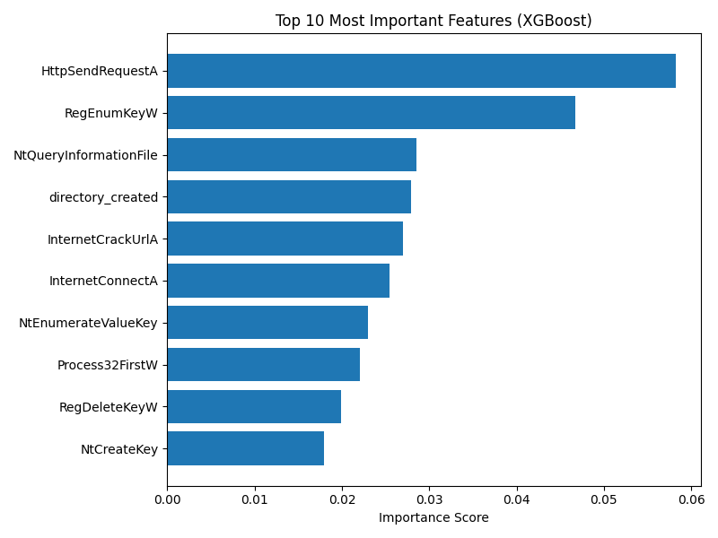

📌 Project Overview
This project builds a machine‑learning model that classifies software applications as either high‑risk or low‑risk based on their behavioural features. The raw dataset was provided in a sparse format, requiring careful transformation before modelling. The final XGBoost classifier achieved 93.2% precision and 98.2% recall on the validation split.
🧹 Data Preparation
The raw data consisted of rows containing a risk score followed by only the features triggered by each application.
Each row was parsed into a dictionary and expanded into a full table using pandas. Missing features were left as
NaN, which XGBoost handles internally.
- Parsed sparse rows into full feature tables
- Mapped feature numbers to meaningful names
- Created binary
risk_indicator(≥0.30 = high risk) - Removed duplicate rows to avoid leakage
- Saved final dataset as
processed_data.csv
🤖 Model Training
XGBoost was selected due to its strong performance on high‑dimensional, sparse datasets. The dataset was split using an 80/20 train–validation split.
- Precision: 93.2%
- Recall: 98.2%
- Feature importance plot generated (Top 15 features)

Top 15 Most Influential Features
📦 Packaged Model
The trained model is saved as xgboost_model.pkl, and the full list of feature names is saved as
feature_columns.pkl. This ensures any developer can reconstruct the correct input structure.
- Load model using
pickle - Load feature list to build correct DataFrame
- Missing features should remain
NaN - Model returns
1(high risk) or0(low risk)
📊 Visualisations
Below is the feature importance plot. Additional plots can be added here if needed.

Feature Importance (Top 15)
▶️ How to Run
- Run
data_preparation.py - Run
model_training.py - Run
model_testing.py - Run
sample_test_script.pyfor predictions
📄 Requirements
This project uses Python 3.12.7. Install dependencies using:
pip install -r requirements.txt